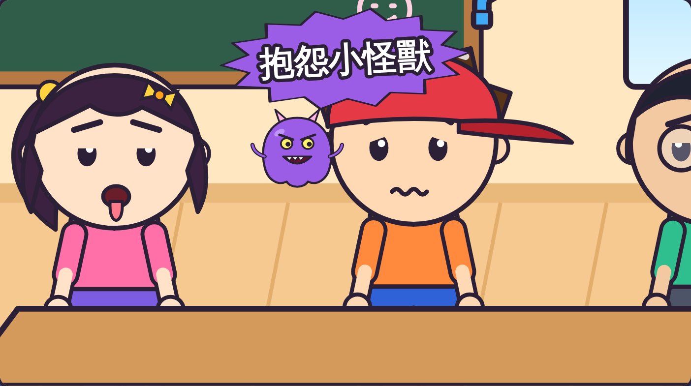
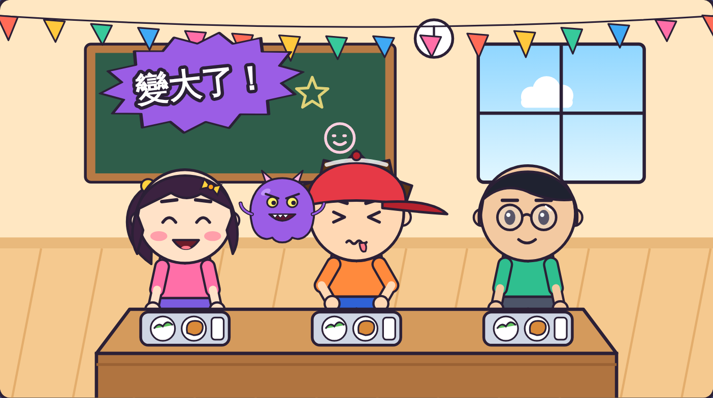
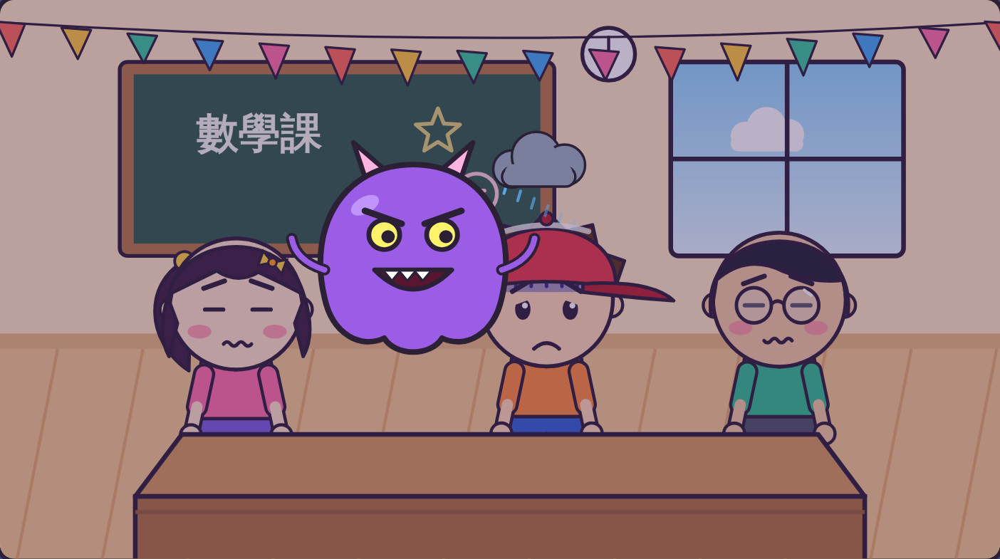
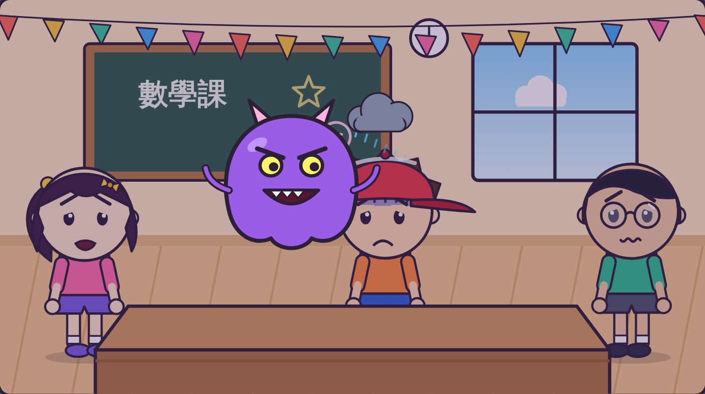
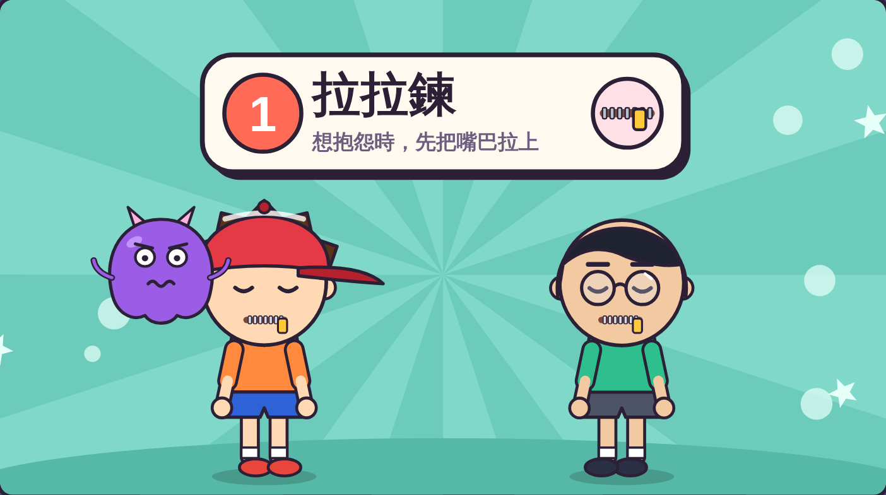
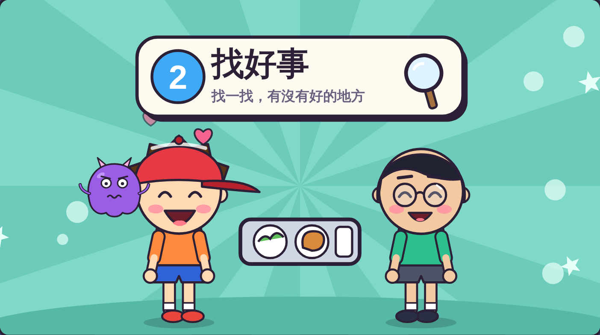
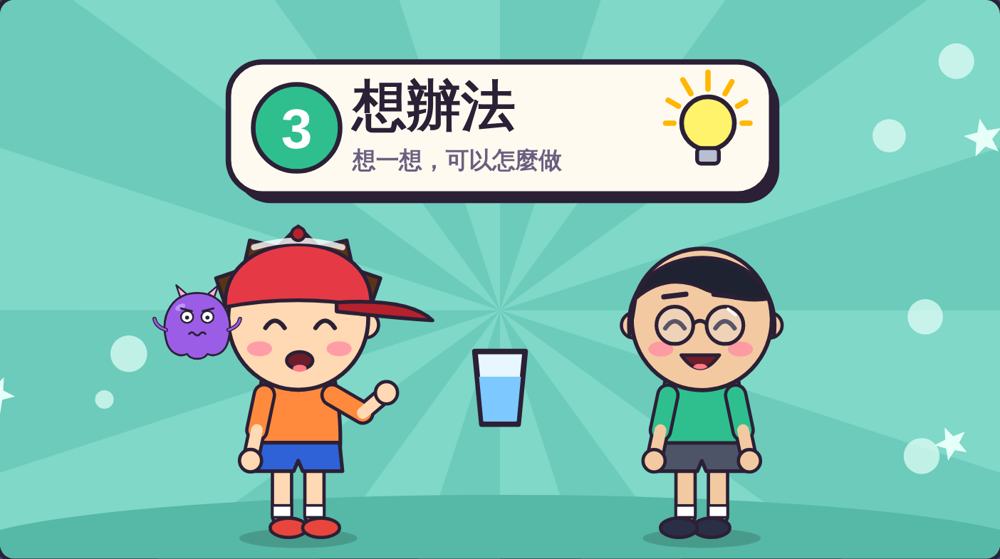
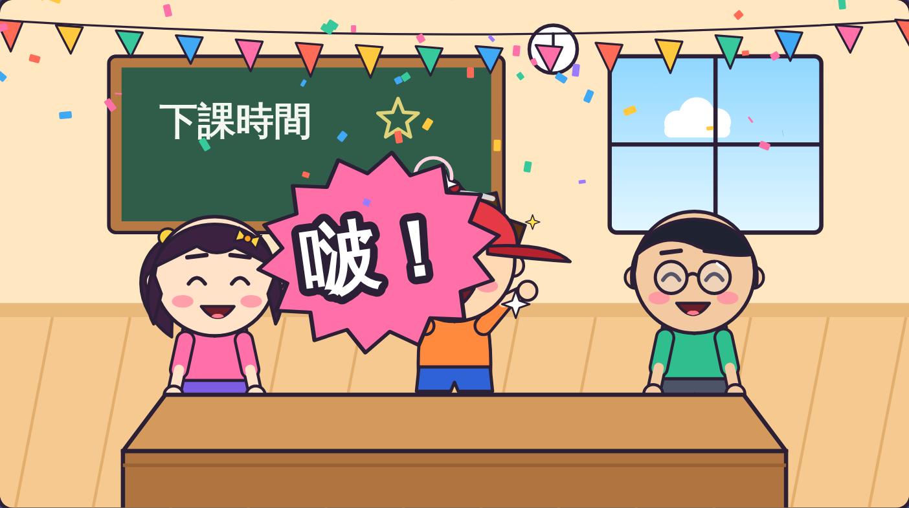
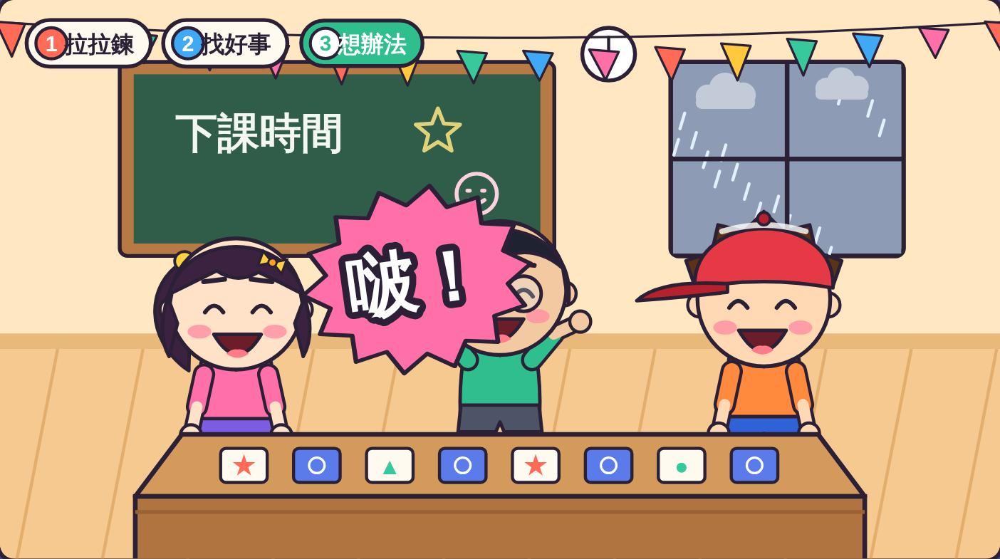
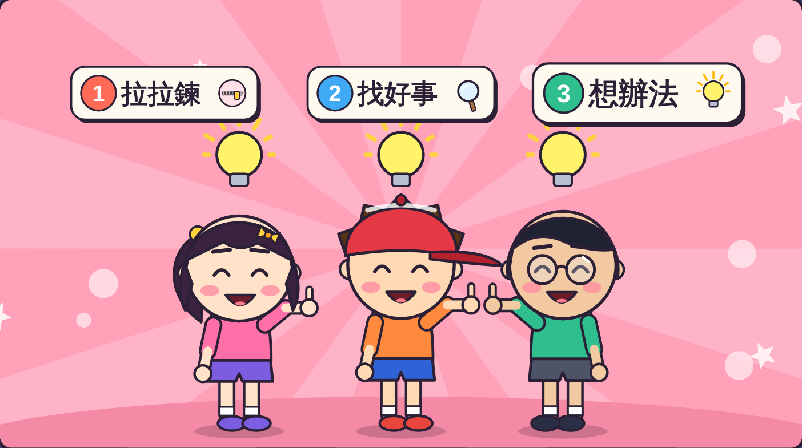

虎尾小劇場｜三年級資源班
1
抱怨沒有讓事情變好。
2
拉拉鍊、找好事、想辦法。
虎尾小劇場｜再見了，抱怨小怪獸
想一想
什麼時候想抱怨？
說完心情變好嗎？
旁邊的人覺得怎樣？

虎尾小劇場｜再見了，抱怨小怪獸

「好熱喔！熱死了！」
「噁，青菜好難吃！」
「好煩喔！我不想寫！」
虎尾小劇場｜再見了，抱怨小怪獸

小怪獸越變越大，
阿樂心情越來越差。

小安和阿凱
也不想靠近了。
虎尾小劇場｜再見了，抱怨小怪獸
虎尾小劇場｜再見了，抱怨小怪獸
1
嘴巴先拉上
2
拿放大鏡找一找
3
想一個好主意
第 1 步

手在嘴巴前面，
像拉上拉鍊。
想抱怨的時候，
先不要說出口。
一起拉拉鍊！
虎尾小劇場｜再見了，抱怨小怪獸
第 2 步

兩手圈成放大鏡。
「青菜難吃，
可是有我喜歡的雞腿！」
換你找找看！
虎尾小劇場｜再見了，抱怨小怪獸
第 3 步

想一想，可以怎麼做。
天氣熱 → 去喝水
作業多 → 一題一題寫
想一個辦法！
虎尾小劇場｜再見了，抱怨小怪獸

阿樂用三步驟，
小怪獸「啵」一聲不見了。

下雨天，阿凱也用三步驟，
改在教室玩桌遊。
虎尾小劇場｜再見了，抱怨小怪獸
老師抽一張情境卡，用三步驟把抱怨變成好方法。
情境 1
情境 2
情境 3
虎尾小劇場｜再見了，抱怨小怪獸
一起念口訣
抱怨先拉鍊，
好事找一找，
辦法想一想，
小怪獸，再見！

打開「趕走小怪獸挑戰題」，
回答 8 個問題。
8 題
虎尾小劇場｜再見了，抱怨小怪獸